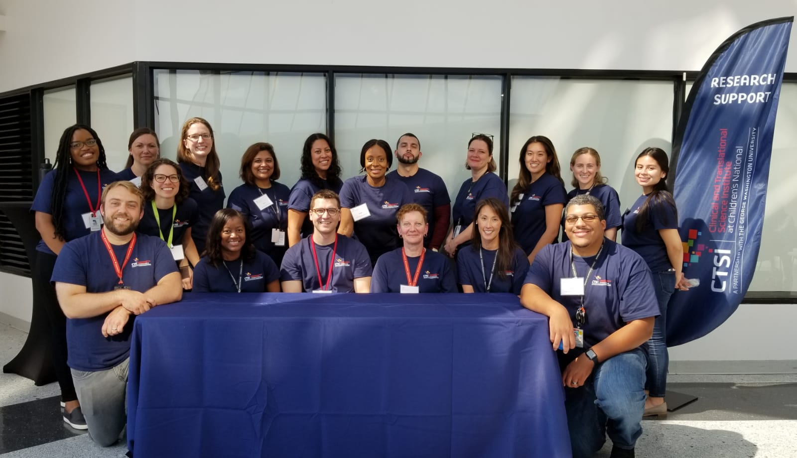

CTSI-CN Team
Your Research
Support Center
CTSI-CN Team
Your Research
Support Center
The CTSI-CN Virtual Organizer connects GW and CNH investigators, staff, and community partners with local research training, tools, and navigators. This web-based organizer integrates knowledge, resources, and best practices from the CTSI-CN and the CTSA network to assist investigators and research teams through the 8 steps of the research cycle.
Watch the brief videos to learn more about the Virtual Organizer.
The Clinical and Translational Science Institute at Children's National (CTSI-CN) is a partnership between Children’s National Hospital and The George Washington University and recognizes the outstanding strengths in clinical and translational research that will be further enhanced.
The CTSI-CN offers unique resources in translating discovery to improved health. It provides highly integrated, cost-effective, investigator-focused resources designed to overcome research barriers, promote collaborative research, and provide research training with a special focus on children’s health. With an emphasis on health disparities and childhood antecedents to adult diseases, CTSI-CN builds upon its pediatric research strengths in areas such as rare diseases, asthma, and neuro-developmental disabilities to collaborate with a national network of 1,200 community health centers.
Nitasha C. Nagaraj, DrPH, George Washington University, shares how she uses the Virtual Organizer tool as a researcher. She also shares how the online tool helps her students understand the various design options.
“Comparing SARS-CoV-2 to other Coronaviruses- What Makes SARS-CoV-2 Different?” with Dr. Hensley
Did you miss the 2022 Children's National - NIAID Symposium? Catch up on the presentations, Q&A discussion, and abstract presentations and visit the CTSI-CN YouTube channel

Created with Mobirise
Free HTML Website Maker